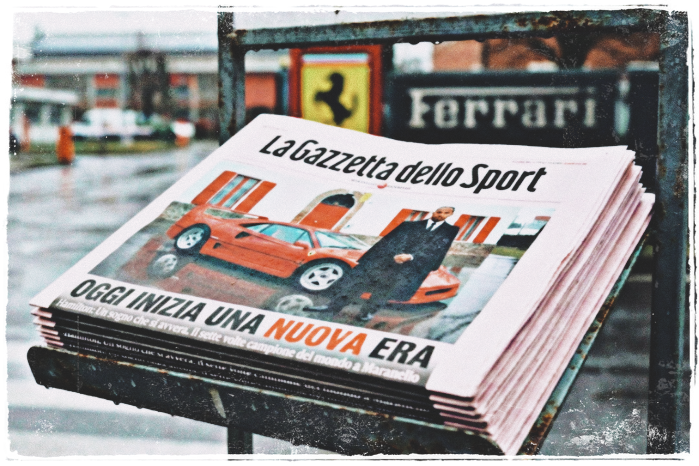
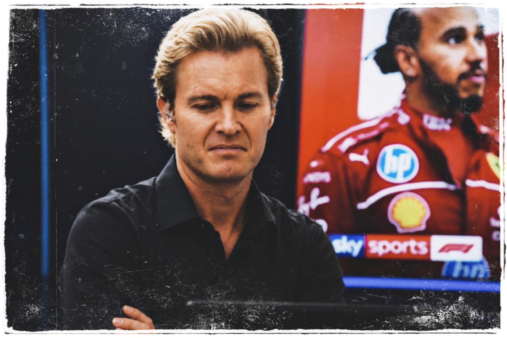
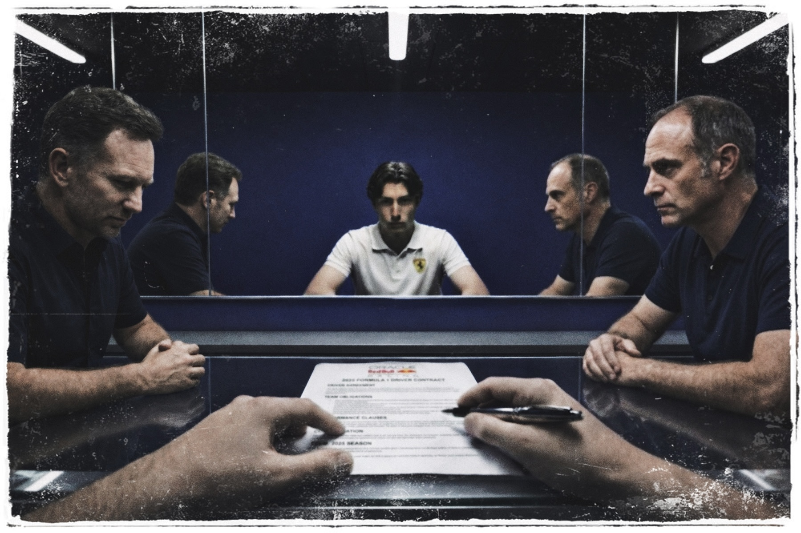

Chapter 1
The Announcement
The Ferrari announcement in Maranello
The world had turned scarlet, and it was blinding...
Flashbulbs detonated like summer lightning,
sharp, surgical, and relentless.
A mechanical heartbeat, the rhythmic clicking
of a thousand shutters capturing the moment
the tectonic plates of Formula 1 shifted forever.
In the center of the storm,
the red wasn't just a colour.
It was deeper than blood, polished to a mirror finish,
and draped over the shoulders of a man
who already owned the history books.
The kind of red that didn't ask for your attention.
It simply took it.

Lewis Hamilton — Scuderia Ferrari
Seeing the name linked to the house of red
felt heavier than any silver thread
on a race suit ever could.
It sat in the air like a verdict
that had already been read aloud
before anyone in the room had a chance to object.
As Lewis raised the garment for the cameras,
the press room dissolved into a fever dream
of shouting voices and frantic motion.
Journalists scrambled, their questions piercing the air
like shrapnel, desperate to puncture the legacy
before the ink was even dry.
Microphones jabbed forward.
Elbows found ribs.
Someone at the back was already
filing copy on a phone held above their head.
Outside the soundproofed glass,
the Tifosi were already losing their minds.
In the streets of Maranello, the air had turned thick,
acrid and sweet at once, laced with the chemical burn
of red flares cutting through the afternoon heat.
The moment hadn't earned this kind of grandeur,
but the celebration was old-world and operatic.
Men wept openly into vintage scarves.
Flags bearing the Prancing Horse
fluttered in a haze of crimson smoke,
limping one second and snapping taut
the next as the crowd surged beneath them.
To the Italians,
this wasn't just a signing.
It was a coronation.
The King had arrived at The Temple.
The Sky F1 studio
Three hundred miles away,
in the clinical silence of the Sky F1 studio,
the atmosphere was something else entirely.
Here, the air was filtered and cold,
scrubbed of anything organic.
It smelled of burnt coffee and expensive hairspray,
a television smell, manufactured and deliberate.
The studio lighting was the kind that didn't flatter
so much as expose, casting everything in a flat,
interrogative white that left no shadows to hide in.
On the main screen, a massive portrait of
Lewis Hamilton crowded out everything else.
The Seven-time World Champion,
forty years old, draped in red for the first time.

Nico Rosberg sat with his arms folded and his jaw set.
He leaned forward slowly, the way a man does
when he's already decided what he's going to say
but is choosing the right moment to say it.
His eyes were sharp, analytical,
glancing over the digital icons of
the sport's brightest junior prospects.
The eyes of someone who had spent a career
measuring gaps in thousandths of a second.
Names like Antonelli, Bearman, and Bortoleto,
were nudged sideways by the algorithm,
their photographs shrinking toward
the very edge of the frame with a quiet,
pixelated indignity, until one by one,
they flickered and vanished entirely.
"Ferrari hasn't just bought a driver,
they've bought an insurance policy,"
Rosberg said, his voice dropping an octave
beneath the ambient hum of the studio.
"But in doing so, they've told every young driver
in their system that the door is bolted shut.
They haven't just burnt a bridge.
They've nuked it."
Karun Chandhok turned from the screen,
his finger hovering over the empty space
where a photograph had been a moment ago.
The absence of it was louder than
anything on the broadcast.
"What about the Belgian?" he asked.
"He just came off one of the most
dominant F2 seasons in history.
He was the Golden Boy.
Now? He's a footnote..."
The broadcast cut to a snippet of
archived footage from earlier that summer.
Spa-Francorchamps.
The podium.
Champagne catching the light in sheets as it came down.
And there, in the middle of it all, was Hendryx Huntyr,
drenched and grinning, arms raised
with the casual certainty of someone
who believed the future was already decided.
The commentator's voice in the clip was bright
with a certainty that had now aged like milk:
"Remember the name, folks.
The Scarlet's future is in very safe hands."
The Red Bull hospitality suite
The studio feed faded,
and the broadcast moved on.
In the Red Bull hospitality suite,
Dr. Helmut Marko stood on the balcony,
a dark silhouette against the glaring paddock sun.
He had the serenity of a man who knew
reaction was a currency best spent slowly.
Below him, the giant screens burned across the track.
He watched them with an unnerving stillness
that made the air around him
feel denser than it should.
When a reporter approached, thrusting a microphone
toward his face to ask about the "Hamilton Effect",
Marko didn't even blink.
"Ferrari likes to buy history,"
he rasped, his voice as dry
as the Milton Keynes wind.
"At Red Bull, we prefer to build it."
The microphone lingered for another second.
Marko had already turned back toward the circuit.
The reporter withdrew, and the moment dissolved
into the paddock noise as if it had never happened.
Then...
The noise stopped.
Not a fade, not a trail-off.
The screaming fans, the frantic commentary,
and the digital roar of social media,
it didn't just diminish...
One moment the world was deafening,
and the next there was nothing but the low,
pressurised quiet of a room that had been designed
to keep the outside world exactly where it belonged.
Hendryx signs the contract
In a private office tucked away
from the prying eyes of the paddock,
the silence was heavy enough to feel.
No windows to the outside.
Dark blue walls, deep enough that the colour
seemed to absorb the light rather than reflect it.
The kind of room that was built to make things feel final.
Only the rhythmic, metallic ticking of a watch.
A countdown to a new reality.
And the hum of a hidden air conditioner
working somewhere inside the walls.

Hendryx Huntyr sat at a minimalist glass table.
He was still in his team gear.
The Prancing Horse felt jarring against the cold,
indifferent surface of the glass, against the navy
of the men occupying either side of him.
Without the roar of the Tifosi or the flash of the cameras,
the yellow insignia felt like a relic.
Something belonging to a version of him
that was already receding.
He looked a little older than he had on the Spa podium.
Not in years, but in something harder to name.
The softness around the eyes, maybe.
The way a person looks when they've stopped
hoping something will resolve itself
and started deciding instead.
His face was a mask of unnatural calm.
His gaze was fixed on the heavy document
resting before him.
Not reading it, not anymore.
He'd read it,
he knew what it said.
The man across from him
said nothing for a long moment.
He slid a fountain pen across the glass,
making a sharp, lonely clink as it came to rest.
He didn't rush him.
He let the weight of the moment
hang in the air, thick and heavy.
He was used to letting silence do the work.
"You know what this means, Hendryx," he said softly.
"If you sign this, you aren't just joining our team.
You're stepping into a lion's den.He won't give you an inch.
The world will call you a traitor
long before they call you a champion..."
Hendryx finally looked up.
The "Prodigy" mask didn't just slip.
It had already shredded into a million pieces.
But his eyes didn't hold the heat of anger.
What replaced it was quieter and far more dangerous.
They held the freezing, predatory precision of a man
who had already stopped mourning his past.
"I don't want their loyalty," Hendryx said,
his voice cutting through the clinical silence."I want them to watch."
He didn't check his phone for the news.
He didn't look at the photos of Lewis smiling
in the seat that had been promised to him.
He didn't give himself the small,
punishing luxury of grief.
He simply reached out and took the pen.
It felt perfectly balanced in his hand,
steady, weightless, and lethal.
He lowered the nib to the paper.
The ink bled into the grain,
dark and permanent, spreading with the slow
certainty of something that couldn't be undone.
He felt the resistance of the paper against the nib,
the slight drag of it, the way a signature,
at its core, is just controlled pressure.
The white page disappeared
beneath his eyelids.
Somewhere in the silence,
a door clicked shut.
The Scarlet had made a mistake...